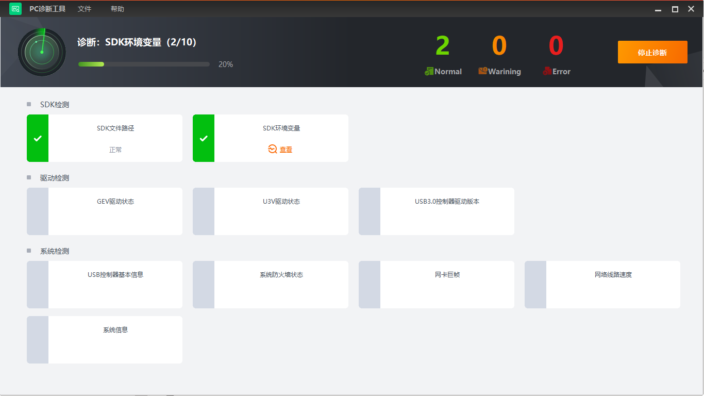
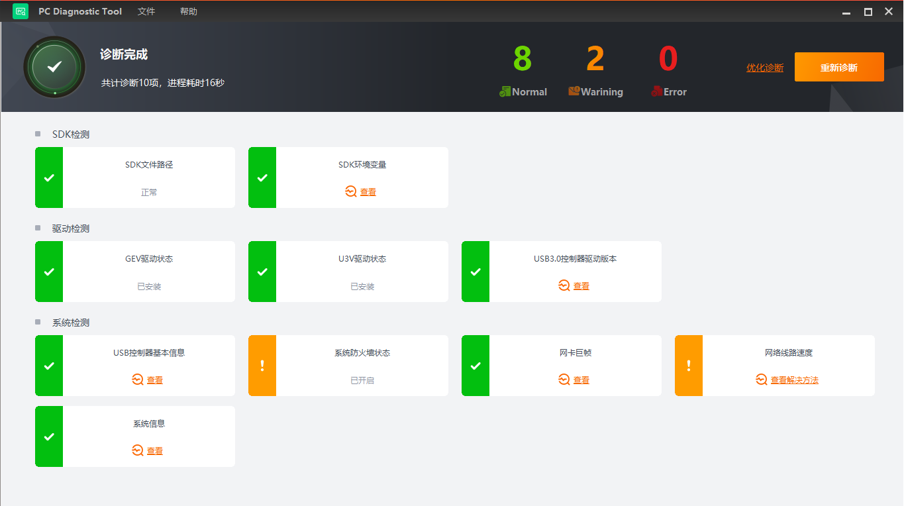
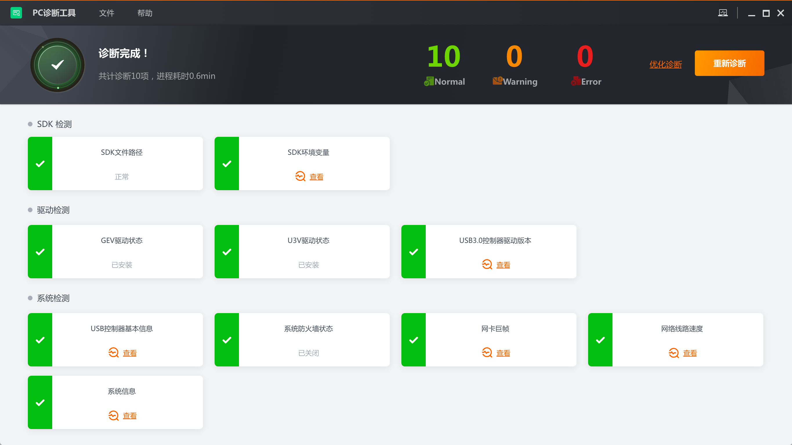

工具可对诊断结果为非正常的内容可针对性进行处理，主要分为三个阶段，即
当采集卡出现异常时，通过工具可对SDK、驱动以及系统包含的内容逐个进行检测，单击开始诊断，如下图所示。
SDK检测：检测C:\Windows\SysWoW64和C:\Windows\System32系统路径下是否存在多余的SDK文件，以及环境变量是否正常；
驱动检测：检测GEV以及U3V驱动安装是否正常，查看USB3.0控制器驱动版本信息；
系统检测：检测系统防火墙的状态以及网络线路速度，查看USB控制器、网卡巨帧以及系统的相关信息。

图 1 开始诊断单击停止诊断，即停止当前的诊断操作。
完成诊断后，工具可对诊断内容进行判断，诊断结果如下图所示。按照严重程度由高到低可分为异常、警告、正常3种状态。
若有需要优化的检测项，可单击相应内容的查看或查看解决办法等内容可进行逐一优化。

图 2 诊断结果处理警告和异常的信息后，工具提供对非正常状态的内容或全部内容进行诊断复查，分为优化诊断和重新诊断，处理异常后诊断的结果如下图所示。
优化诊断：单击优化诊断，系统可对出现警告和异常状态的内容进行诊断，也可对部分优化项进行优化修复；
重新诊断：单击重新诊断，系统可对所有内容重新进行诊断。

图 3 诊断复查